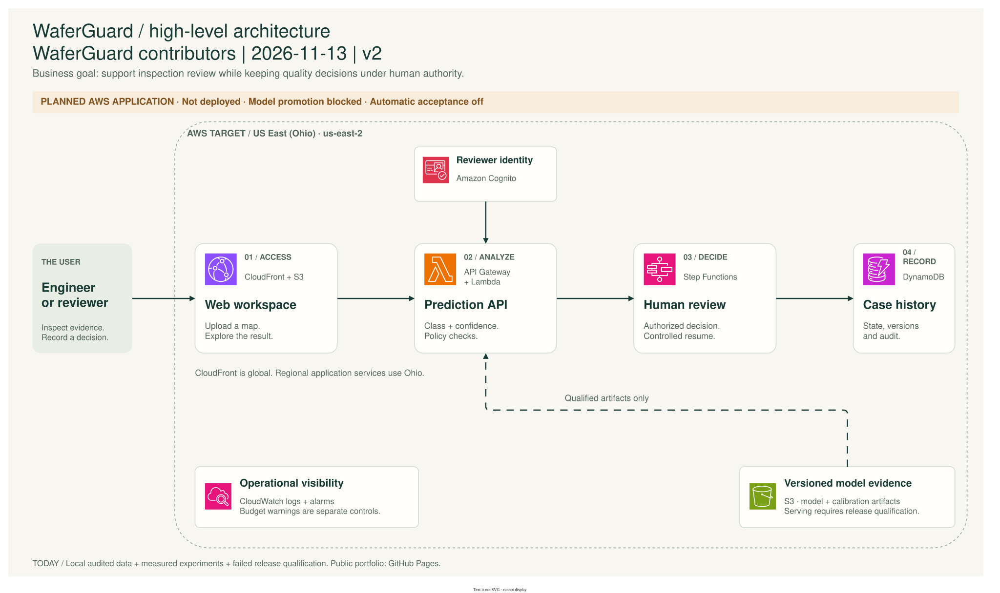

Architecture · High-level view
One path from evidence to a human decision.
Open the workspace. Analyze the map. Review the evidence. Record the decision. Identity, model versioning, and monitoring support that flow.



Measured locally. Hosted separately.
Data auditing, model experiments, calibration, and qualification ran locally. The static portfolio is hosted on GitHub Pages. The authored CDK foundation covers S3 storage, logging, retention, and budget warnings.
No WaferGuard AWS application is deployed. API/review modules are drafts, and model promotion remains blocked by the failed Gate 4 qualification.
Separate evidence from authority.
The model provides class and confidence evidence. Policy checks guide review. An authorized human records the decision, while case versions and audit events make the transition traceable.
Step Functions coordinates the planned workflow; application logic must enforce authorization, expiry, single-use decisions, and reconciliation. No real factory release is authorized.
What the foundation actually defines.
View the authored storage and budget scope

Read the architecture guide ↗ · Review the remaining AWS work ↗